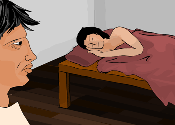

|

Watching his son sleeping, Dieneces thought of the approaching birthday: in less than a week his son would be seven. This was an occasion of great importance, as his son would leave his family home and join other Spartan boys in the state education system, called the agoge. Here he would sleep in barracks and take part in physical training to mould him into a good soldier. | |
| ...previous | next... |